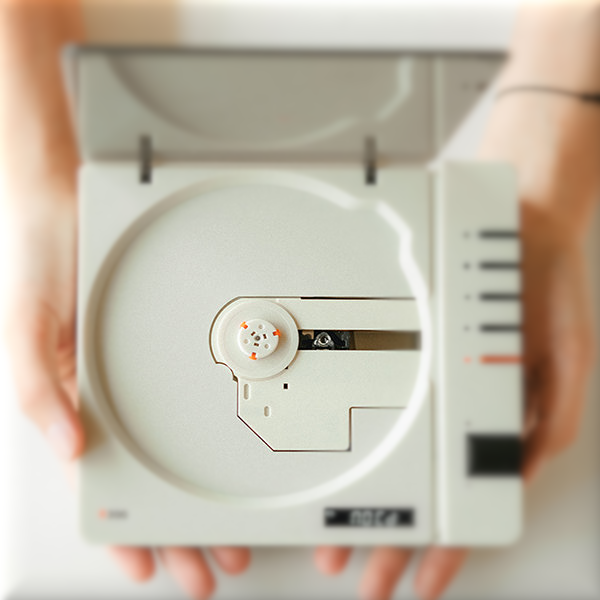
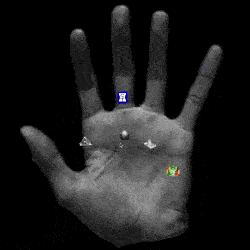
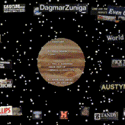

DigiCDs
an experimental music release project. music released in the form of a png file

TandyLinx
a linktree-like site, but with fun templates. in alpha

The Whiff Hand
a hand-based linktree for the Old Maybe's album, The Whiff

Dagmar Zuniga Linx
a link page for the recent release of Dagmar Zuniga's album

Tree Simulator
visuals for katarina mazur's graduate recital packaged as a fun 3D tool!
Another Day Visualizer
visualizer for sam walters...it does more than just float...take a listen :)
EV1 Visualizer
visualizer with elie mcafee-hahn for EV1 release. Released with single by LE1
TandiPods
repairing discarded iPon nano 2nd gens, the cheapest and hardest iPod to fix
Hobby Horse Website
co-designed Hobby Horse Press website
PCoTandy Catalog
a page for documenting all of our releases
Sketches
scraps leftover from a few 'nature of code' youtube videos